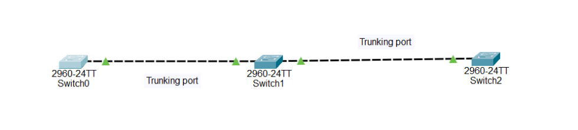

VTP is a Cisco proprietary protocol used to synchronize VLAN information across switches in a network.
Example:
If Switch S2 is a client → it accepts VTP updates and updates its VLAN database automatically.
Example:
Switch S3 will forward VTP advertisements but will not update its VLAN database.
| Feature | Server | Transparent | Client |
|---|---|---|---|
| Sends VTP messages | Yes | Yes | Yes |
| VLAN CLI configuration | Yes | Yes | No |
| Supports VLAN 1–1005 | Yes | Yes | Yes |
| Supports VLAN 1006–4095 | No | Yes | No |
| Updates from VTP | Yes | No | Yes |
| Sends periodic updates | Yes | No | No |

Switch1:
Switch(config)#vtp mode server
Device mode already VTP SERVER.
Switch(config)#vtp domain Hadi
Changing VTP domain name from NULL to Hadi
Switch(config)#%SW_VLAN-6-VTP_DOMAIN_NAME_CHG: VTP domain name changed to Hadi.
Switch(config)#vlan 10
Switch(config-vlan)#Name IT
Switch(config-vlan)#vlan 20
Switch(config-vlan)#Name HR
Switch(config-vlan)#int f 0/1
Switch(config-if)#switchport mode trunk
Switch(config-if)#
%LINEPROTO-5-UPDOWN: Line protocol on Interface FastEthernet0/1, changed state to down
%LINEPROTO-5-UPDOWN: Line protocol on Interface FastEthernet0/1, changed state to up
Switch(config-if)#switchport trunk allowed vlan all
Switch2:
Switch(config)#vtp mode client
Setting device to VTP CLIENT mode.
Switch(config)#vtp domain Hadi
Changing VTP domain name from NULL to Hadi
Switch(config)#%SW_VLAN-6-VTP_DOMAIN_NAME_CHG: VTP domain name changed to Hadi.
Switch(config)#int f0/1
Switch(config-if)#switchport mode trunk
Switch(config-if)#switchport trunk allowed vlan all
Switch3:
Switch(config)#vtp mode client
Setting device to VTP CLIENT mode.
Switch(config)#vtp domain Hadi
Changing VTP domain name from NULL to Hadi
Switch(config)#%SW_VLAN-6-VTP_DOMAIN_NAME_CHG: VTP domain name changed to Hadi.
Switch(config)#int f0/1
Switch(config-if)#switchport mode trunk
Switch(config-if)#switchport trunk allowed vlan all
it forwards the information but does not apply it.
Server ---- Transparent ---- Client